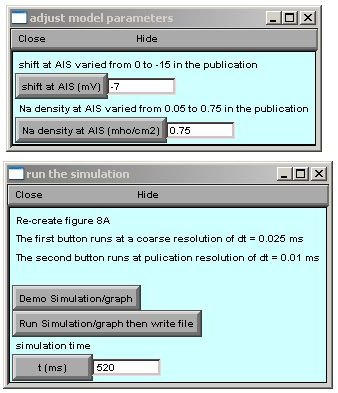

This is the readme for the model associated with the paper: Wimmer VC, Reid CA, Mitchell S, Richards KL, Scaf BB, Leaw BT, Hill EL, Royeck M, Horstmann M (2010) Axon initial segment dysfunction in a mouse model of genetic epilepsy with febrile seizures plus. J Clin Invest 120:2661-71 These model files were supplied by Marie-Therese Horstmann. Usage: ------ Check that you have NEURON installed (available from http://www.neuron.yale.edu). Autolaunch from ModelDB **or** download and extract the archive and compile the mod files to run under ... linux/unix ---------- by typing nrnivmodl in the top level directory. Then type nrngui mosinit.hoc mswin ------- Run mknrndll, cd to the expanded directory and press make nrnmech.dll button. Double click on the mosinit.hoc file. MAC OS X -------- Drag and drop the expanded folder onto mknrndll icon in the NEURON application folder. Drag and drop the mosinit.hoc file onto the nrngui icon to start the simulation. Once the simulation is running: ------------------------------- Choose one of the first two buttons to either run a demo version (low resolution) of figure 7A or a publication quality run. You can also change the model parameters varied in the publication above. 